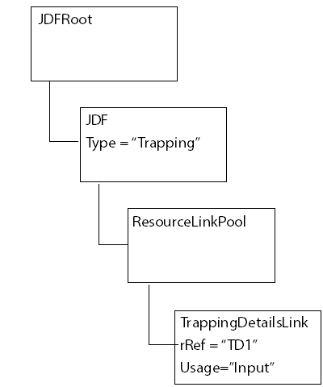

JDF Features¶
The use of pdfmark in PostScript can include representations of Job Definition Format (JDF) features. JDF is an extensible XML-based job ticketing format designed for use by the printing industry. Information about JDF can be obtained from http://www.cip4.org .
In particular, pdfmark for JDF allows the PostScript file/stream to specify elements and attributes to be added to a JDF document being used for a job. Applications that support JDF pdfmark include Acrobat Distiller 6.0 and 7.0.
Note
Distiller 8.0 and later does not support JDF. Any JDF-related pdfmark commands in the PostScript stream are ignored.
Syntax¶
/Attribute
string
/Value
string
/Subtype /CreateAttribute
/JDF pdfmark
The Attribute and Value keys are described in the following table.
Keys supported by JDF pdfmark
Key |
Type |
Semantics |
Attribute |
string |
An XPath expression that identifies the location of the attribute absolutely from the root of the JDF. If any portion of the hierarchy of elements containing the attribute is not present in the JDF, they are created. XPath is a language for addressing parts of an XML document, as defined in XML Path Language (XPath) Version 1.0 available from http://www.w3.org/TR/xpath . JDF pdfmark supports the following subset of XPath expressions: Expression ::= JDFRoot'/'Attribute |
JDFRoot'/'Children'/'Attribute
JDFRoot ::= '//JDF'
Children ::= Element | Element'/'Children
Element ::= element |
element'['FilterExpression']'
FilterExpression ::=
Filter | Filter 'and' FilterExpression | Filter
'or' FilterExpression
Filter ::= Attribute'='Value
Attribute ::= '@'attribute
|
Values |
string |
|
XPath Examples¶
The following table presents examples of XPath expressions.
XPath expressions
Expression |
Interpretation |
Selects the |
|
Selects the |
|
//JDF/JDF[@Type=”Trapping”]/@Status |
Selects the |
//JDF/JDFResourceLinkPool/ComponentLink[@Usage=”Output” and @ProcessUsage=”Good”]/@rRef |
First identifies the |
Note
In actual use, all XPath expressions should end with @ attribute because they must define the location of an attribute.
The JDF pdfmark commands shown in the following example cause supporting applications to modify the current JDF document, as illustrated in the following diagram.
Using JDF pdfmark to set Trapping element and subelement attributes
[ /Attribute (//JDF/JDF[@Type="Trapping"]/@Type)
/Value (Trapping)
/Subtype /CreateAttribute /JDF pdfmark
[ /Attribute
(//JDF/JDF[@Type="Trapping"]/ResourceLinkPool/TrappingDetailsLink/@rRef)
/Value (TD1)
/Subtype /CreateAttribute /JDF pdfmark
[ /Attribute
(//JDF/JDF[@Type="Trapping"]/ResourceLinkPool/TrappingDetailsLink
[@rRef="TD1"]/@Usage)
/Value (Input)
/Subtype /CreateAttribute /JDF pdfmark
The following shows the JDF structure created through JDF pdfmark in the preceding example.
